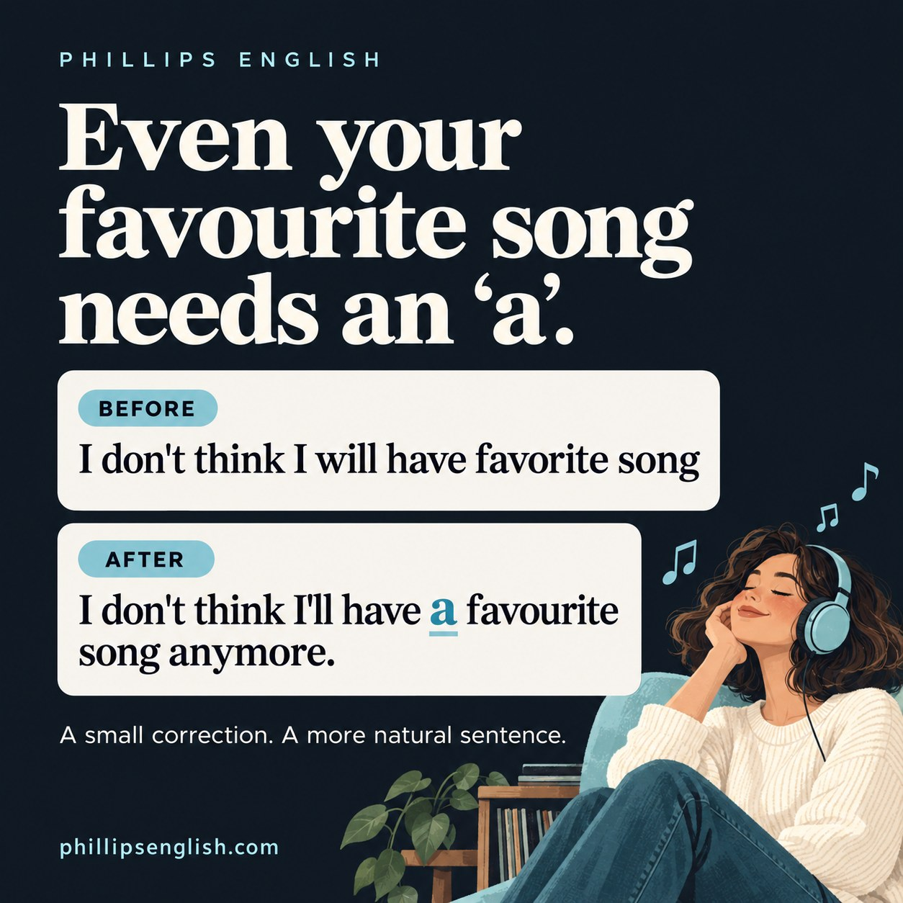

You can remember every word of your favourite song and still forget one tiny word when talking about it. The little “a” does like to sneak off.
Here is a sentence to work on:
Before
I don't think I will have favorite song
After
I don't think I'll have a favourite song anymore.
The meaning is easy to follow. We can still tidy up the grammar and make the sentence more conversational. This is the sort of small correction I enjoy working on at Phillips English, because you can use it again in a completely different conversation.
The grammar fix is “a favourite song”. “I’ll” is a conversational version of “I will”. “Anymore” adds the idea that something is changing from how it was before.
Why do we say “a favourite song”?
Song is a countable noun: one song, two songs. In this sentence it is singular, so we need a determiner. We use a when talking about a favourite song without naming it.
The adjective does not remove that need. The pattern is a + adjective + singular countable noun:
- “I have a favourite song.”
- “She has a difficult question.”
- “We need a clear answer.”
You can also say “My favourite song is…” because my already does the determiner’s job. You would not add another “a” there.
A or an?
Choose according to the sound immediately after the article. Favourite starts with an /f/ sound, so it is a favourite song. Interesting starts with a vowel sound, so it is an interesting song.
And “music”? We usually treat it as uncountable: “I like music.” A song is one countable piece of music. That small distinction helps with several common English grammar mistakes.
I will or I’ll: which is correct?
Both are correct. “I will” is not a grammar error. “I’ll” is an English contraction that often sounds natural in everyday speech and informal writing.
Compare “I don’t think I will have a favourite song” with “I don’t think I’ll have a favourite song”. The prediction stays the same. The second version is more conversational.
The full form can be useful for emphasis, such as “I will finish it.” Practise both, and choose the form that suits what you are saying. For more examples, read my guide to English contractions for natural speaking.
What does “anymore” add?
Anymore means no longer. In the corrected sentence, it adds a sense of change: perhaps you used to have a clear favourite, but you think that will no longer be the case.
If you are simply making a prediction, you can leave it out: “I don’t think I’ll have a favourite song.” If you are describing your current preference, try “I don’t have a favourite song anymore.”
So “anymore” is useful when it matches your meaning. It is an addition to the message, rather than a word every sentence needs.
Anymore vs any more
| Meaning | Example |
|---|---|
| No longer | “I don’t listen to that song anymore.” |
| An extra amount | “I don’t need any more song recommendations.” |
For an extra amount, write any more as two words. British English also commonly uses any more for “no longer”, so “I don’t listen to that song any more” is correct too.
Favourite or favorite?
Favourite is British spelling. Favorite is American spelling. Both are correct. We use the British version at Phillips English, but that extra “u” is a spelling choice, not the grammar fix.
Your turn: three quick corrections
Say these aloud, then improve them:
- “I have favourite film.”
- “We need an clear explanation.”
- “I don’t listen to that band.” Add the meaning “no longer”.
Check your answers
- “I have a favourite film.”
- “We need a clear explanation.”
- “I don’t listen to that band anymore.” In British English, any more is also correct here.
Now tell me about a song you used to love. Which phrase will help you explain how your taste has changed?
Small corrections you can actually use
In my lessons, I want us to put a correction straight back into a conversation. We can try “a favourite song”, then “a favourite film”, then a sentence about your work. The practice gives that tiny word a few more chances to stick.
If you would like feedback on your own English, request a free 25 minute trial lesson. Bring a topic you enjoy. We can find the useful corrections as we talk.
Grammar references: British Council: articles a, an and the; Cambridge Dictionary: contractions; Cambridge Dictionary: any more and anymore.